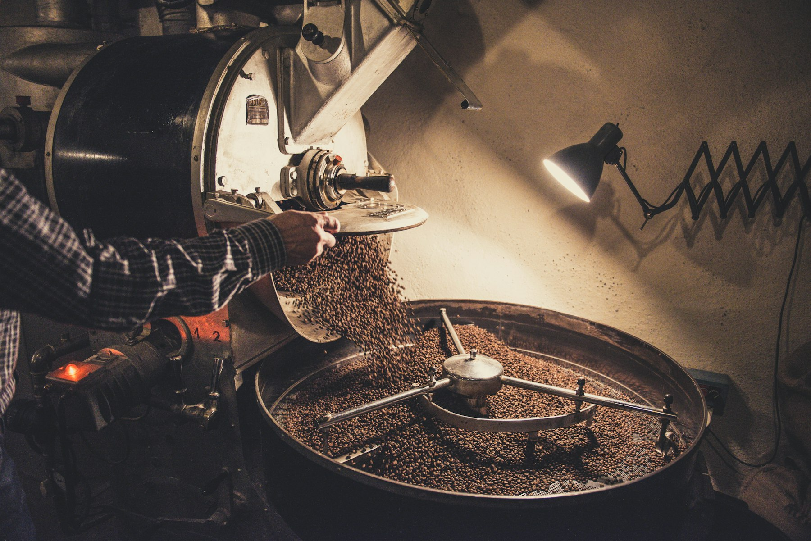
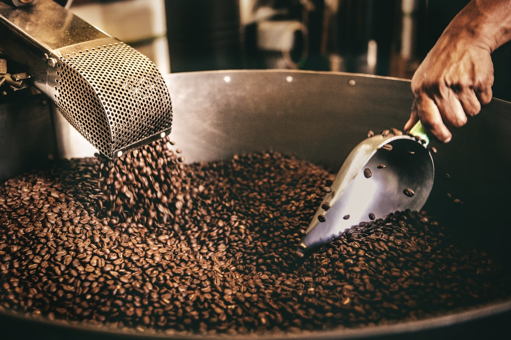

The roastery
Twelve kilos at a time, and no more
The drum
Our drum roasts twelve kilos per batch. Small enough to taste every single batch before it goes into a bag; large enough to keep the neighbourhood in coffee. Every batch gets a number and a card in the roast log, and that card travels with your bag.
What we pay
We buy from two importers who pay above the Fairtrade minimum per lot, and we tell you per bean what it cost. No stories about journeys to origin; just the numbers.
Come watch
The kettle room is open during shop hours. If the drum is running you are welcome to watch; first crack is at minute eight, give or take.
Every bag leaves with a card like this one: the batch number, the roast in minutes and degrees, what we paid per pound, and what we tasted before it went out. Number 214 went out this spring.

Saturdays
The drum runs while you taste. Come stand next to it.